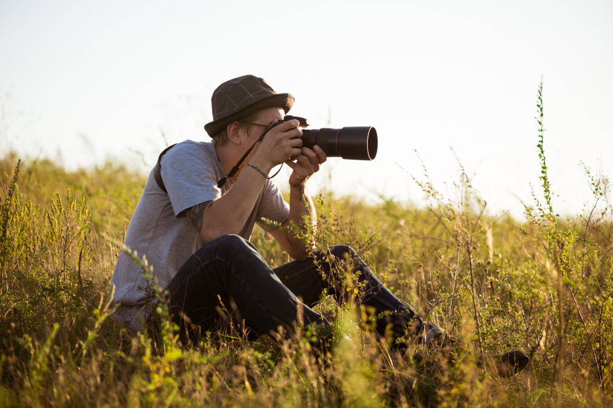
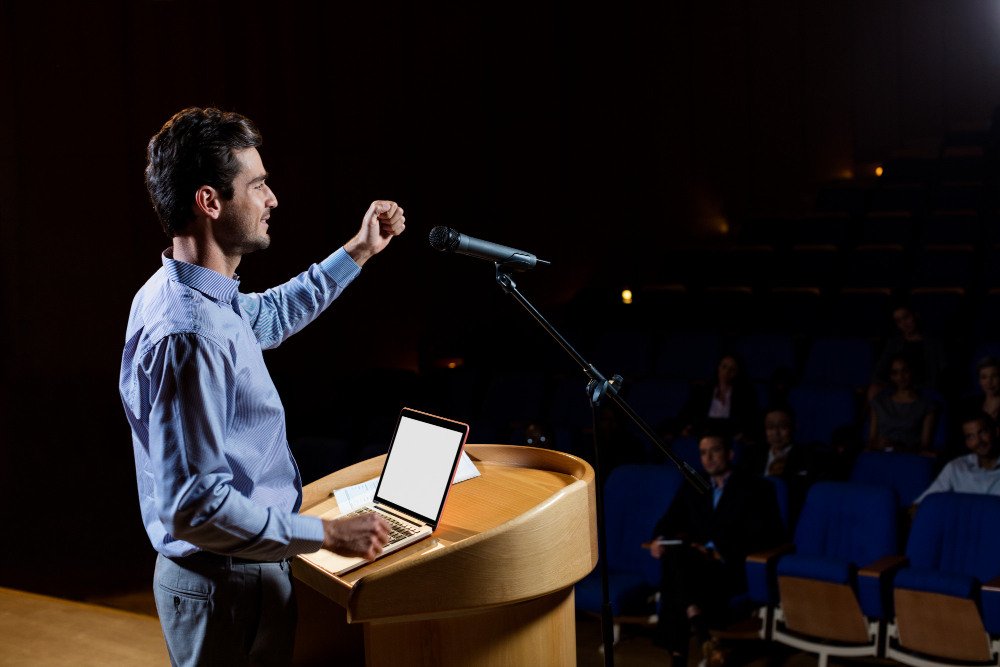

Keahlian
Masih dalam tahap belajar

Fotografi
-
Fotografi adalah seni dan proses mengambil gambar atau foto dengan menggunakan kamera untuk membuat gambar yang merekam momen, objek, atau subjek tertentu.

Public Speaking
-
Public speaking adalah kemampuan berbicara di depan umum dengan tujuan menyampaikan pesan, mempengaruhi audiens, dan membangun koneksi dengan mereka.
Videography
-
Videography adalah seni dan proses merekam dan menghasilkan video dengan menggunakan kamera untuk merekam gambar bergerak yang menangkap momen, objek, atau subjek tertentu.

Kepengurusan organisasi
-
Kepengurusan organisasi merujuk pada proses dan praktik pengelolaan dan pengaturan kegiatan organisasi.